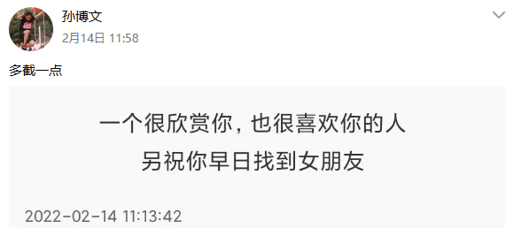
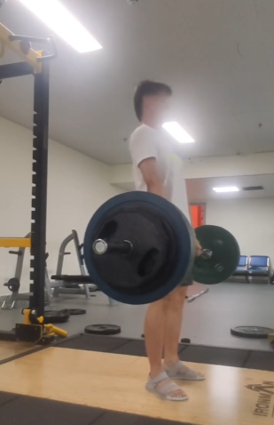
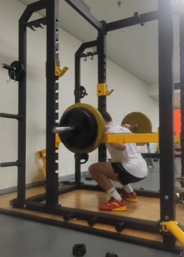
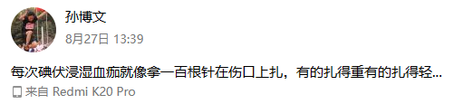
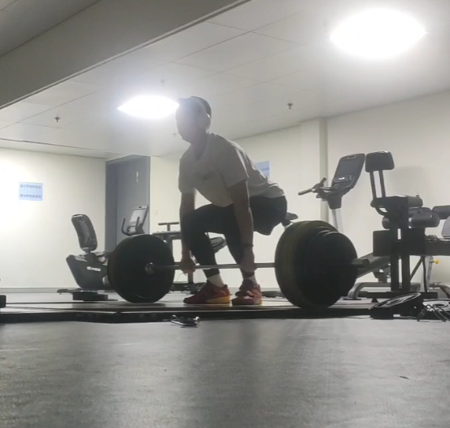

年终盘点
条评论1、1.7 首次参与组织200多人的机考：自己的机器，挪用的系统，紧张的安排，垃圾的性能，随时会崩…但渡劫成功
2、1.21 看白色巨塔
3、2.6 第一次滑冰
4、2.11
5、2.14

当然后来真的见面然后寄了
6、2.19 看长江去了
7、3.1 人体成分分析体脂率 22.1，开始两个月的减脂
8、3.12 中山忌辰
9、3.13 半夜在学校里鬼混，后来的故事懂的都懂了
10、4.12 2022年第一把冷水澡
11、4.21 完美洗牌
12、4.22 M记限时新品汉堡，苏炳添代言
13、5.3 两个月减脂结束，体脂率降到 16.1
14、5.14 Deadlift 100 kg。立下 flag 是一年到 200
15、5.19
17、6.1 新鞋，国家队同款

18、6.17 Deadlift 120kg

19、6.23 做10个引体向上
20、6.26 从手洗转向洗衣机
21、6.26 Squat 100kg

22、6.28 Bench Press 70kg
23、7.9 新衣回
24、8.14 在宿舍打地铺睡觉，因为太几把热了
25、8.22 骑自行车骑嗨了压弯摔了个寄

26、9.18 Squat 120
27、9.28 保研 + 递补学硕
28、10.3 Deadlift 150kg
29、10.10
30、10.23 第一次配好 vim
30.5、11.11 2022年最后一次冷水澡
31、11.15 Squat 130kg
32、11.18- 后来的事懂的都懂
33、12.12 看到 Abramovic 和 Ulay 的 Rest energy
34、12.17 Deadlift 160kg 本年度最满意的一次试举：无腰带，丝滑，锁定到位（就是鞋子穿错了）

35、12.19 冠军！
36、12.21 发烧退烧直播当场干两斤米饭